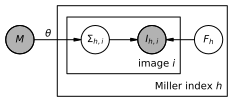

Careless
Merging crystallography data without much physics.


Installation
As described in the TensorFlow docs, it is best practice to install careless in a fresh anaconda environment to avoid conflicts with previously installed dependencies.
Create a new environment and install careless using the following commands.
conda create -yn careless python
conda activate careless
pip install --upgrade pip
pip install careless
Installation with GPU Support
Careless supports GPU acceleration on NVIDIA GPUs. For users who would like to run careless in a cluster computing environment, requesting an interactive GPU node for the installation might be helpful. You may want to first follow the latest Tensorflow installation instructions and then install careless. Specifically,
Create and activate a new environment with the appropriate Python version
conda create -yn careless python=checktheversion conda activate careless pip install --upgrade pip
Install dependencies for GPU support (see the following paragraph)
Install TensorFlow (and verify its GPU support)
pip install tensorflow==checktheversion #check that tensorflow sees the correct number of GPUs python3 -c "import tensorflow as tf; print(len(tf.config.list_physical_devices('GPU')))"
Install
carelesspip install careless
The following dependencies are required for GPU support
NVIDIA driver,
CUDA Toolkit, and
cuDNN.
You can determine the versions required by the latest TensorFlow release from the TensorFlow docs. The driver is usually installed through the system package manager and will require root privileges. In a cluster computing environment, a suitable version of the NVIDIA driver will usually be provided by your system administrators. The two libraries, CUDA toolkit and cuDNN, may either be installed through the system package manager or using the Anaconda python distribution as described in the TensorFlow docs.
You may confirm GPU acceleration is active using the nvidia-smi command to monitor GPU usage during model training. If you are having trouble enabling GPU support, you may want to use the --tf-debug flag during training for verbose logging of TensorFlow issues.
Dependencies
careless is likely to run on any operating system which is compatible with TensorFlow.
careless currently supports Python 3.8 - 3.10.
Pip will handle installation of all dependencies.
careless uses mostly tools from the conventional scientific python stack plus
optimization routines from TensorFlow
statistical distributions from Tensorflow-Probability
crystallographic computing resources from
careless does not require but may take advantage of various accelator cards supported by TensorFlow.
Get Help
For help with command line arguments, type careless mono --help for monochromatic or careless poly --help for Laue processing options. You can also consult the online documentation for a list of all available parameters.
For usage examples and data from the publication, check out careless-examples
Still confused? File an issue! Issues help us improve our code base and leave a public record for other users.
Core Model

careless uses approximate Bayesian inference to merge X-ray diffraction data.
The model which is implemented in careless tries to scale individual reflection observations such that they become consistent with a set of prior beliefs.
During optimization of a model, careless trades off between consistency of the merged structure factor amplitudes with the data and consistency with the priors.
In essence, the optimizer tries to strike a compromise which maximizes the likelihood of the observed data while not straying far from the prior distributions.
The implementation breaks the model down into 4 types of objects.
Variational Merging Model
The VariationalMergingModel is central object which houses the estimates of the merged structure factors.
In careless merged structure factors are represented by truncated normal distributions which have support on (0, ∞).
According to French and Wilson2 this is the appropriate parameterization for acentric reflections which are by far the majority in most space groups.
These distributions are stored in the VariationalMergingModel.surrogate_posterior attribute.
They serve as a parametric approximation of the true posterior which cannot easily be calculated.
It has utility methods for training the model.
It contains an instance of each of the other objects.
During optimization, the loss function is constructed by sampling values for the merged structure factors and scales these are combined with the prior and likelihood to compute the Evidence Lower BOund or (ELBO)
Gradiennt ascent is used to maximize the ELBO.
Priors
The simplest prior which careless implements are the popular priors1 derived by A. J. C. Wilson from the random atom model.
This is a relatively weak prior, but it is sufficient in practice for many types of crystallographic data.
careless will include support for reference and multivariate priors in future releases.
Likelihoods
The quality of the current structure factor estimates during optimization is judged by a likelihood function.
These are symmetric probability distributions centered at the observed reflection observation.
careless includes normally-distributed and robust, t-distributed likelihoods.
Scaling Models
Right now the only model which careless explicitly implements is a sequential neural network model.
This model takes reflection metadata as input and outputs a gaussian distribution of likely scale values for each reflection.
Special metadata keys for scaling.
careless will parse any existing metadata keys in the input Mtz(s).
During configuration some new metadata keys will be populated that are useful in many instances.
dHKL : The inverse square of the reflection resolution. Supplying this key is a convenient way to parameterize isotropic scaling.
file_id : An integer ID unique to each input Mtz.
image_id : An integer ID unique to each image across all input Mtzs.
{H,K,L}obs : Internally,
carelessrefers to the original miller indices from indexing asHobs,Kobs, andLobs. Supplying these three keys is the typical method to enable anisotropic scaling.
Considerations when choosing metadata.
Polarization correction : Careless does not apply a specific polarization correction. In order to be sure the model accounts for polarization, it is important to supply the x,y coordinates of each reflection observation.
Isotropic scaling : This is easily accounted for by supplying the ‘dHKL’ metadata key.
Interleaved rotation series : Most properly formatted Mtzs have a “Batch” column which contains a unique id for each image. Importantly, these are usually in order. If you have time resolved data with multiple timepoints per angle, you may want to use the “Batch” key in conjunction with the “file_id” key. This way images from the same rotation angle will be constrained to scale more similarly.
Multi crystal scaling : For scaling multiple crystals, it is best if image identifiers in the metadata do not overlap. Therefore, use the ‘image_id’ key.
1: Wilson, A. J. C. “The Probability Distribution of X-Ray Intensities.” Acta Crystallographica 2, no. 5 (October 2, 1949): 318–21. https://doi.org/10.1107/S0365110X49000813.
2: French, S., and K. Wilson. “On the Treatment of Negative Intensity Observations.” Acta Crystallographica Section A: Crystal Physics, Diffraction, Theoretical and General Crystallography 34, no. 4 (July 1, 1978): 517–25. https://doi.org/10.1107/S0567739478001114.